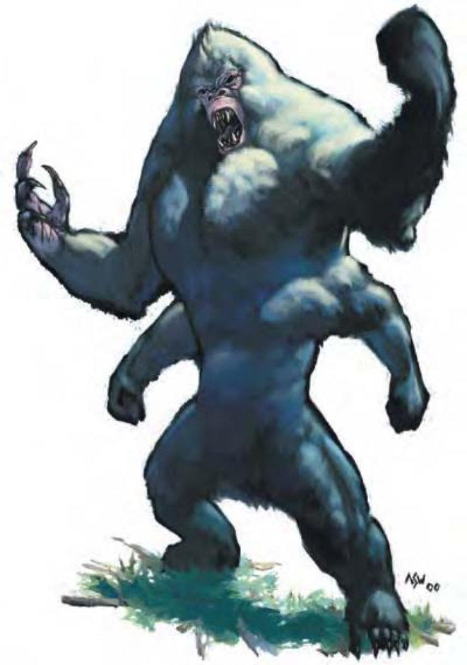

| 资料栏位 | 四臂猩 (Girallon) 大型魔法兽 |
| 生命骰 | 7d10+20（58HP） |
| 先攻 | +3 |
| 速度 | 40英尺（8格）、攀爬40英尺 |
| 防御等级 | 16（-1体型、+3敏捷、+4天生）、接触12、措手不及15 |
| 基本攻击/擒抱 | +7 / +17 |
| 攻击 | 爪抓+12近战（1d4+6） |
| 全力攻击 | 4爪抓+12近战（1d4+6）及啮咬+7近战（1d8+3） |
| 占据/触及 | 10英尺 / 10英尺 |
| 特殊攻击 | 撕扯2d4+9 |
| 特殊能力 | 黑暗视觉60英尺、昏暗视觉、灵敏嗅觉 |
| 豁免 | 强韧+7、反射+8、意志+5 |
| 属性 | 力量22、敏捷17、体质14、智力2、感知12、魅力7 |
| 技能 | 攀爬+14、潜行+8、侦察+6 |
| 专长 | 钢铁意志、健壮（2） |
| 环境 | 热暖带森林 |
| 组织 | 单独或一伙（5-8） |
| 挑战级数 | 6 |
| 宝藏 | 无 |
| 阵营 | 总是绝对中立 |
| 进化 | 8-10HD（大型）；11-21HD（超大型） |
| 等级修正值 | ― |
这种生物看起来像只白色的大猩猩，但他有四只手臂，还有锐利的牙齿与长爪。
四臂猩猩是大猩猩野蛮而有魔法的表亲。他们富有攻击性、嗜血、有强烈的领域观念而且非常强壮。
在地面移动时，四臂猩以两足与下两臂行走。成年四臂猩约有8英尺高，宽阔的胸膛，全身被有厚重的纯白毛皮。体重约为800磅。
战斗四臂猩会攻击所有闯进领域的生物，即使同类也一样。他们盲目好斗的性格也是让这个生物族群不至于过量的因素之一。但这种生物还是有他狡猾的一面。
独居的四臂猩常会躲藏在树枝、树叶堆或灌木丛中，只露出鼻子。当他看到或嗅到猎物时，便会冲出来攻击。四臂猩会挑选他能迅速带着跑掉的猎物，在其同伴做出任何反应前消失于树丛中。对付体型较大的对手，四臂猩会单挑一个，并尽可能迅速地撕裂他。
撕扯（特异）：如果四臂猩的多次爪抓都命中同一个对手，就可抓住并撕裂对方身体，自动额外造成2d4+9点伤害。
技能：四臂猩在进行"攀爬"检定时具有+8种族加值。即使被冲撞或受威胁，他们在进行"攀爬"检定时都可以随时取10。